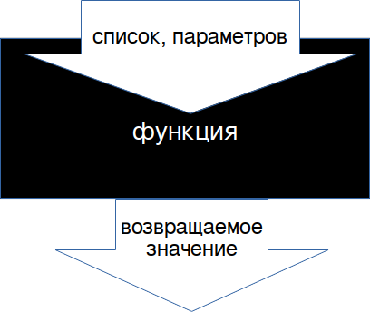

Все языки программирования дают возможность разрабатывать программы в виде небольших модулей (modules), которые в разных языках могут называться по-разному: подпрограмма (subroutine), процедура (procedure), функция (function), метод (method).
Модульность (program decomposition) — это не только способ бороться со сложностью программной системы, но и средство повторного использования кода (reusability), а также повышение читабельности (readability) программы.
Модуль — это набор действий, имеющий имя (module name), необязательный список параметров (parameter list). Если модуль возвращает значение (return value), то это — функция (function). Модули при разработке обычно описываются в отдельных исходных файлах, подключаемых в вызывающей программе. Модули часто хранятся в библиотеках модулей, оформленных как пакеты с исходными текстами (gem, egg, ...) или откомпилированными программами (jar, so, dll, ...).
Описание модулей
# Ruby: # определяет тип содержимого по суффиксу/расширению файла def content_type(file_name) content = 'text/html' suffix = File.extname(file_name) case suffix when '.html' content = 'text/html' when '.css' content = 'text/css' end return content end # Python: # суммирует значения элементов массива def sum_of_elements(array): sum = 0 for i in range(len(array)): sum += array[i] return sum // JavaScript: // вставляет текст в элемент с указанным идентификатором function place_text_in(element_id, text) { var container = document.getElementById(element_id); var span = '' + text + ''; container.insertAdjacentHTML('beforeEnd', span); return container; } // PHP: // находит в списке работника по его идентификатору function find_employee_in_list_by_id($employees, $id) { $employee = NULL; for ($i = 0; $i < sizeof($employees); $i++) { if ($employees[$i]->id() == $id) { $employee = $employees[$i]; } } return $employee; }
Параметры модулей
При описании подпрограммы после её имени (subroutine name) обычно в круглых скобках записываются её параметры (parameter): список имён переменных, которые будут доступны в теле подпрограммы. Значения этих переменных задаются при вызове подпрогораммы.
# Ruby:
def module1(parameter1, parameter2, parameter3) # входные параметры модуля
print(parameter1+" "+parameter2+" "+parameter3)
end
argument1 = "Строительные"
argument2 = "блоки"
module1(argument1, argument2, "программы") # вызов
Хотя в некоторых языках есть возможность описывать именованные параметры и значения по умолчанию.
Не зависящий от языка способ передавать набор «именованных» аргументов: передавать хэш значений:
// JavaScript:
send_data({"language":"JavaScript","year":1995});
Правильно спроектированный модуль выполняет одно определённое действие, обрабатывает данные из входных параметров и формирует возвращаемое значение,
т. е. ведёт себя как функция. Предпочтительно использовать именно функции, которые на производят побочных эффектов (side effects),
то есть не изменяют среду выполнения (execution environment): значения переменных вне модуля.

Вызовы модулей
Функционирование программной системы — это обращения к подпрограммам (subroutine call) с фактическими значениями параметров, аргументами (arguments). Соответствие между передаваемыми при вызове модуля аргументами и списком параметров обычно позиционное, а количество аргументов и параметров должно совпадать.# Ruby: type_of_content = content_type('index.html') # Python: array = [1,2,3,4,5,6,7,8,9] s = sum_of_elements(array) // JavaScript: <div id='container_for_text'> </div> <script> var text_to_add = get_text_from_server(url); place_text_in_element('container_for_text', text_to_add); </script> // PHP: $list_of_employees = load_from_table('employees'); $employee = find_employee_in_list_by_id($list_of_employees, 12); $json_data = data_to_json($employee); send_to_browser($json_data);Применение модулей сокращает размер исходников за счёт повторного использования кода (code reuse), позволяет вносить изменения в единственном месте.
Задания.
Задание M01.
PHP функцию find_in_list($role, $list), которая в списке ролей пользователей ( "Администратор", "Заявитель", "Диспетчер", "Руководитель", "Водитель"), оформленном в виде массива хэшей, ищет роль по названию и возвращает в качестве результата её идентификатор.
$roles = [
array("id" => 1, "role" => "Администратор"),
array("id" => 2, "role" => "Заявитель"),
// ...
];
role_id = find_in_list("Заявитель", $roles); // --> 2
Задание M02.Написать такую же функцию на JavaScript.
Q&A. Q: В чём разница между применением в подпрограммах команд return и echo (или print)? A: echo, как и print, формирует строку, которая «впечатывается» в HTML в том месте, где выполняется скрипт, например, на PHP:
<?php echo(date("Y-m-d")); ?>
или на Ruby:
<%= Time.now %>
или на JavaScript:
<script>
const today = new Date();
document.write(today);
</script>
А return возвращает значение из подпрограммы, которое можно присвоить в переменную или сразу напечать.
Например, на JavaScript:
// сцепляет элементы массива в строку, разделяя их пробелами
function insert_blanks(array) {
var line = "";
for (var i = 0; i < array.length; i++) {
line = line + array [i] + " ";
}
return line;
var list = ["Я", "пишу", "на", "JavaScript"];
var text = insert_blanks(list);
// write делает то же, что и print или echo
document.write(text);
// можно «впечатать» в HTML результат работы функции без присваивания
document.write(insert_blanks(list));
Ссылки: